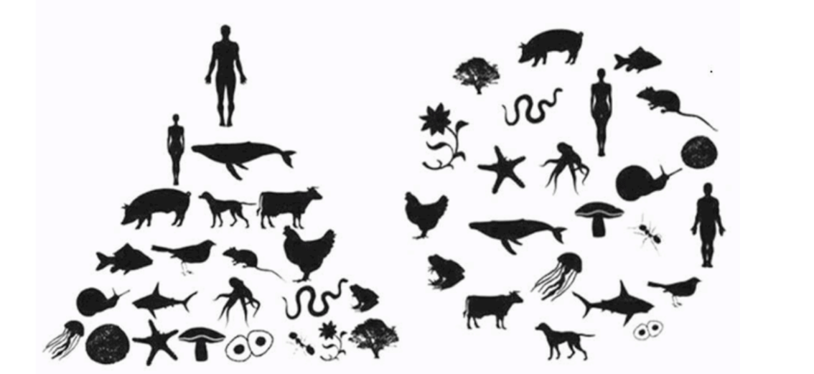
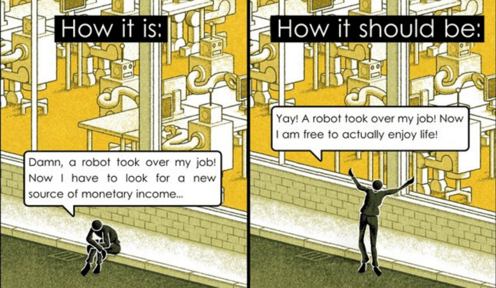
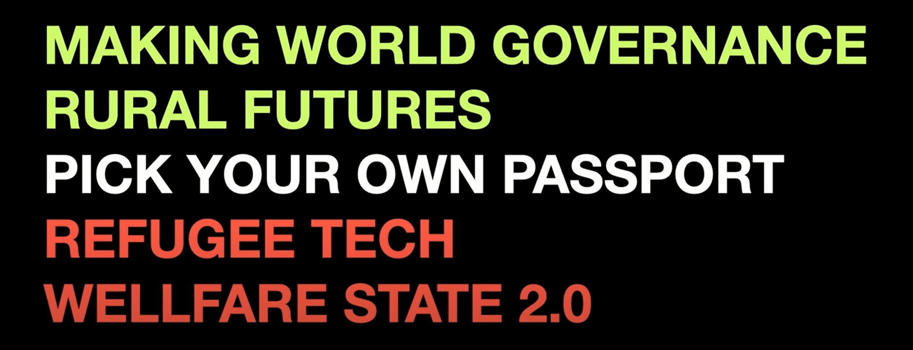

It was a mentally stimulating to understand the story behind of some of the cards of Atlas of the Weak Signals that were introduce to us at the beginning of the master.
There were certain items that motivate me to be attentive to understand how they are developing, the first one, is regarding our perception as a human in a world context, the evolution from being at the top of the pyramid to being one more piece in the ecosystem.
It is definitely a generational issue, of progress in favor of the connection with the earth in every sense, possibly of concepts and feelings for some generations, however, in my opinion it seems that the new generations already come to the information about situations that others generations have faced, learned by living and feeling them. Social evolution.
Being a bit more political, paradigms about robots and how they could influence day-to-day work and contemporary ways of development, generate some anxiety among the population that seeks economic stability through a stable and immovable job.
It seems to me that the perspective on this is changing every time, it is still not clear, but I think that if the big systems want to stay in power they will have to reinvent themselves, because the rules of the games are already changing for citicens individually, generating communities each time more strongers, more and more people are betting on their own systems and economic dependencies in bubbles isolated from the system, or possibly it is just my perception and that of people close to my context.
And finally, the nation as a state and what is a perception of it, it was surprisingly interesting, because in the reading they asked each of us about:
________ Where are you from?
________ What is your nationality?
________ Where are your parents from?
________ How many passports do you have?
________ What is the worst challenging situation in your country?
And it was unexpected for me that many of my classmates, had a lots of issues to comment related to their countries, stories behind. I felt the neccesity to share it. And in my case, not. So, I wondered why?
Also, it is important to follow the global movements, the blockchain, the new regulations, how all these might generate 4 important scenarios of our cities in the very close future: Steady state, World Goverment, Corporation State, Wild State. To undertand them, and to know them might help in the develop of any of them, because governments or corporations can´t do anything without people like us to agree or disagree their proposals.
The question is, what can we do now, with the tools we have to build the future we want?
